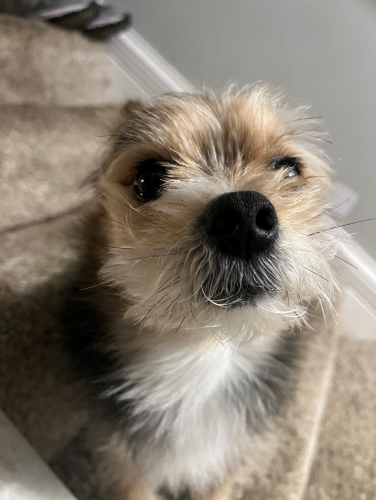
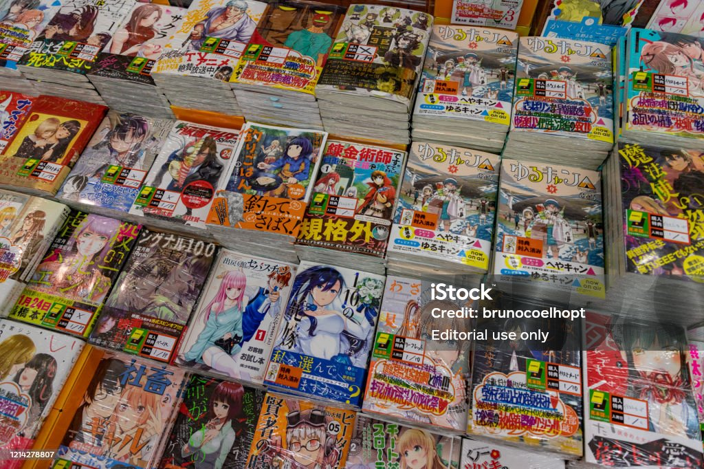

My name is Cincere Butler i've always been interested in programming, what really made me get into it was this game called roblox. You most likely have heard of it, it's a really popular game with hundreds of millions of active players daily. I wanted to become a roblox developer and push out my own game but i started with 0 knowledge in how anything worked when it came to scripting, modeling, animations, and more. So i did what anyone would do and i looked up some tutorials on youtube which really didnt help at all. So i honestly just quit there, but to sum it up i've actually gotten back into it over the summer and i'd still like to put something out there cause i have lots of ideas that i feel could do well. And i am currently developing a dragon ball inspired fighting game.
My favorite exercises
- Lat pulldown
- Planks
- Pull ups
Programming languages i know/am learning
- Java
- Html/CSS
- Lua
- C++ (very new to C++ i've only went over the basics with it)
- Javscript
Besides programming other things i enjoy would be gaming, playing with my dog, and exercising. My dogs name is Marlo, he's a yorkie and he's around 6 years old we've had him since 2020 when he was a little baby and here's a picture of him.

- Marlo
- Birthday:
- Janruary 21st, 2020
- Favorite foods:
- Anything infront of him.
And some video games i enjoy are roblox, marvel rivals, and overwatch. Out of all of those games i play roblox mostly though i'm still not on it as much i cant really give a game on roblox i enjoy playing. I've recently been watching a few good movies and shows though. Breaking bad, Moonlight, Moon Knight, demolition, interstellar, and alot more. Besides that i enjoy watching anime and i really want to get into reading manga, one manga i've started is Vagabond, but i want to get into this manga called BLAME! it seems really interesting i recently seen a video about it, and the artwork in it also looks really good.

Favorite anime/manga
- Dragon Ball z
- Chainsaw Man
- Vagabond